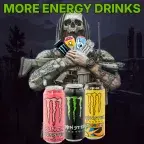
More Energy Drinks
- Downloads
- 62,019
- Favourites
- 56
- Mod lists
- 123
Mod Overview
This mod adds 38 unique energy drinks that have varying useful buff effects that your PMC can enjoy during raids. A small selection of energy drinks can be bought from Therapist that increase in usefulness with higher trader levels such as increased stamina generation, faster looting, combat enhancements, and increased weight capacity.
Each energy drink has a rarity that can be: Common, Uncommon, Rare, and Ultra-Rare. Higher rarity drinks will offer more effective and longer lasting buffs with increasingly larger drawbacks of major energy depletion and skill de-buffs. Many high rarity drinks are flea-banned by default and can only be found in-raid in loose loot food spawns and food loot containers. This mod is highly configurable as most energy drink properties can be edited in the config file.
Available Energy Drinks
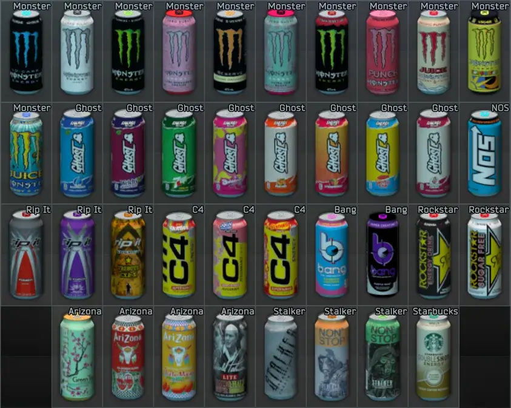
Screenshots
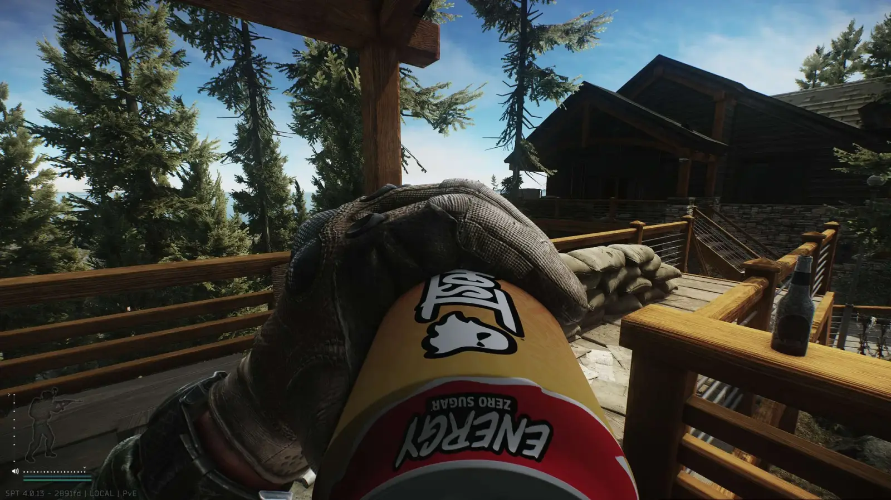
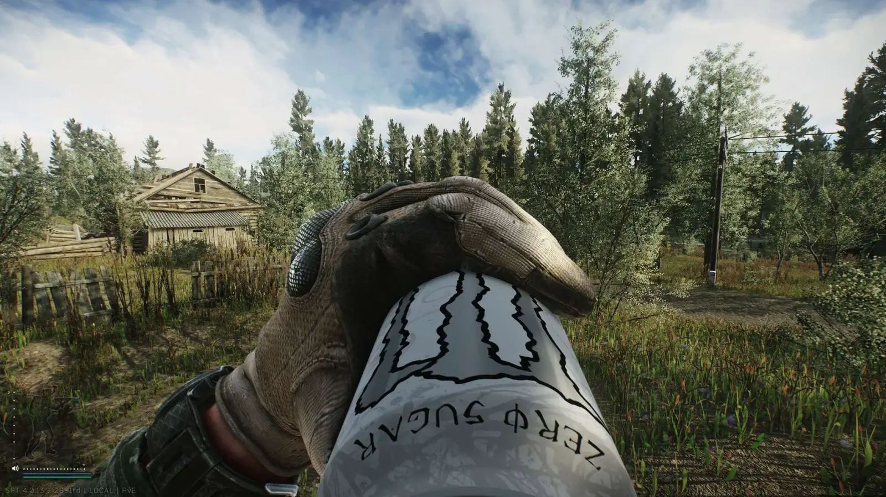
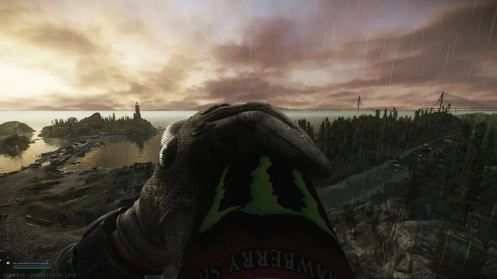
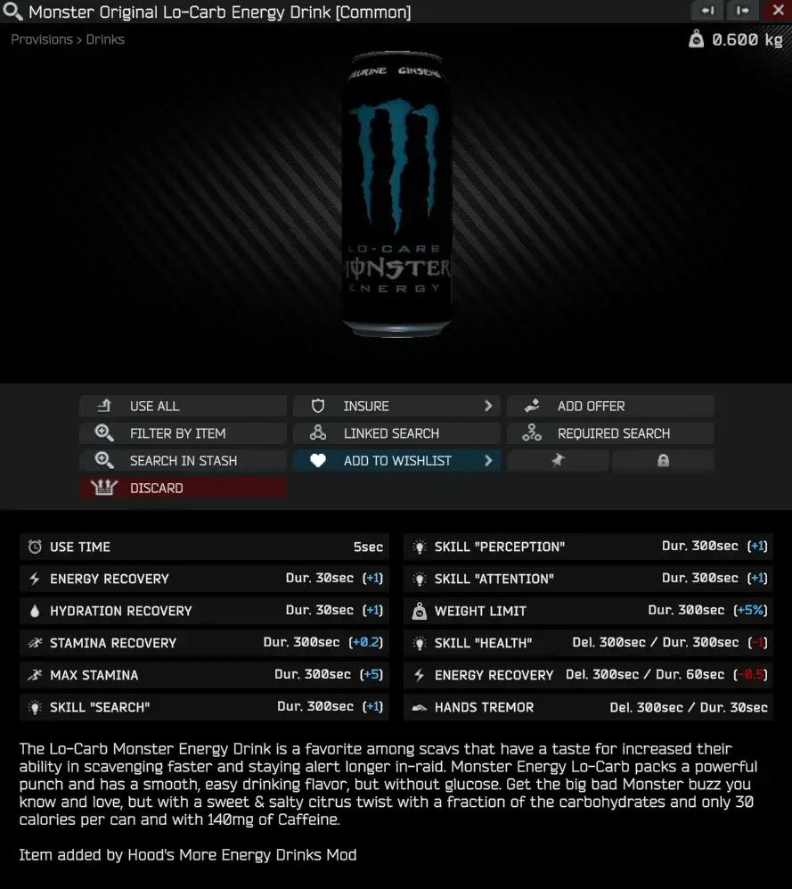
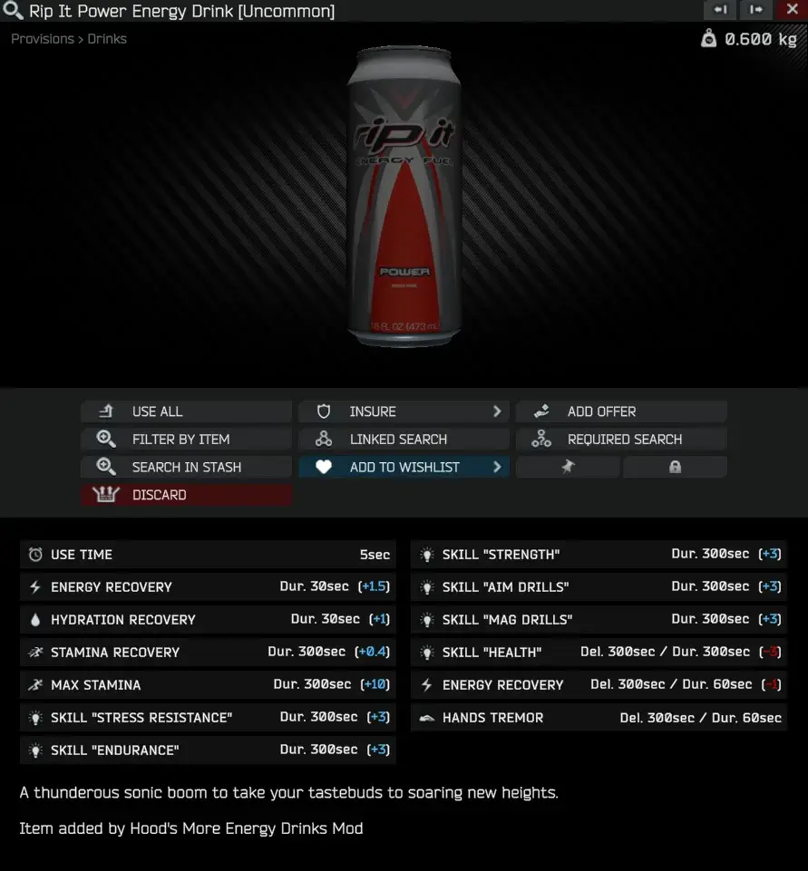
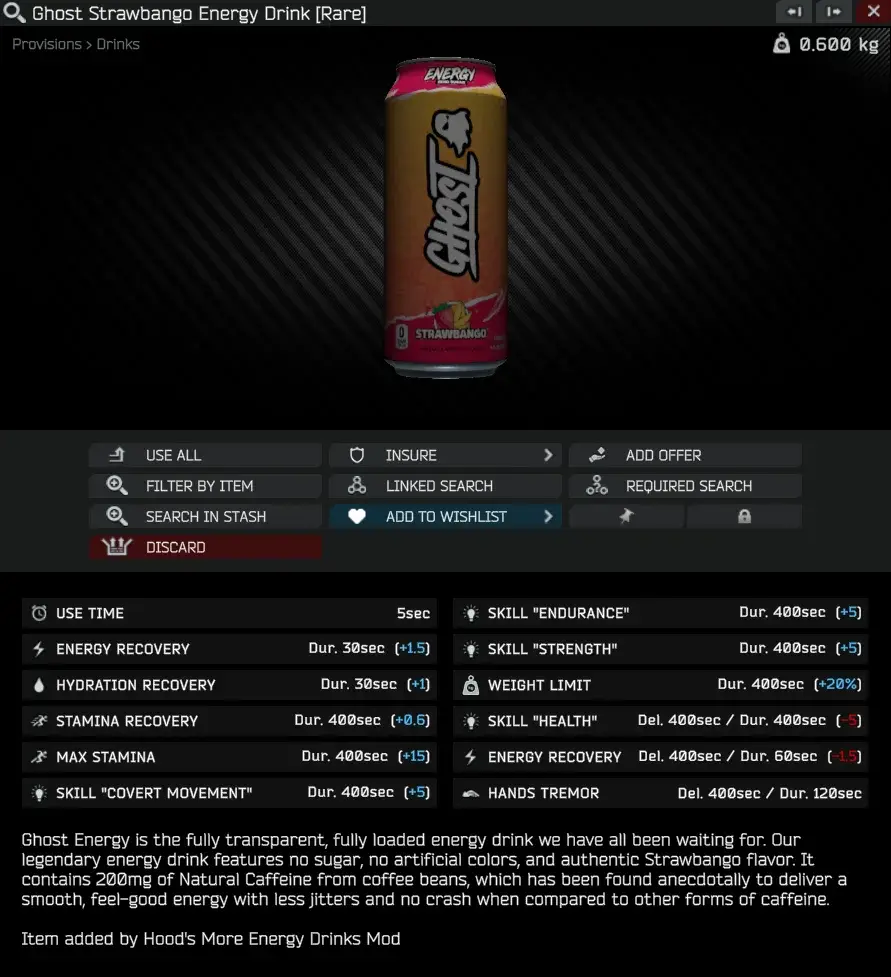
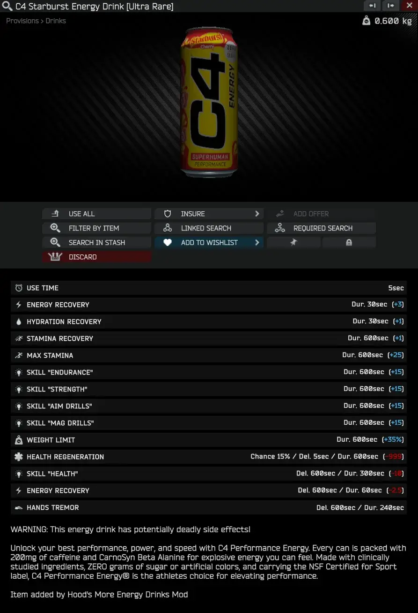
Energy Drink Buff Effect Details:
Each energy drink has their own unique buff effect with varying effectiveness depending on the drink rarity. Common drinks offer minimal stamina and skill gains while Ultra-Rare drinks can provide large stamina and skill buffs with some major drawbacks. A few powerful Ultra-Rare drinks can even cause death if your are unlucky.
Energy drink properties can be edited in the EnergyDrinkBuffs.json file if you want to change any buffs, stamina generation, and debuffs.
Common Energy Drinks:
- Arizona Green Tea (Sold By Therapist LL1)
- +1 Health, +1 Metabolism, +3% Weight Reduction
- Arizona Arnold Palmer
- +1 Stress Resistance, +1 Aim Drills, +3% Weight Reduction
- Arizona Watermelon
- +1 Health, +1 Vitality, +3% Weight Reduction
- Arizona Mucho Mango
- +1 Charisma, +1 Search skill, +3% Weight Reduction
- Monster Blue (Sold By Therapist LL1)
- +1 Scavenging Skills, +5% Weight Reduction
- Monster White (Sold By Therapist LL2)
- +0.25 health regeneration, +1 Aim Drills & Mag Drills
- Monster Green (Sold By Therapist LL2)
- +1 Strength & Endurance, +5% Weight Reduction
- Ghost Blue Raspberry (Sold By Therapist LL2)
- +1 Covert Movement, +1 Search, +10% Weight Reduction
- Starbucks Double Shot
- +1 Stress Resistance, +1 Strength & Endurance
- Bang Rainbow Unicorn
- +1 Stress Resistance, +1 Health & Vitality, +1 Aim Drills & Mag Drills
- S.T.A.L.K.E.R. Original
- +1 Strength & Endurance, +1 Scavenging Skills
- S.T.A.L.K.E.R. Orange Original
- +1 Strength & Endurance, +1 Scavenging Skills
Uncommon Energy Drinks:
- Monster Strawberry (Sold By Therapist LL3)
- +0.4 Health Regeneration, +1 Strength & Endurance, +3 Vitality & Surgery
- Ghost Grape-Cran (Sold By Therapist LL3)
- +3 Covert Movement, +3 Scavenging Skills, +15% Weight Reduction
- NOS (Sold By Therapist LL3)
- +3 Strength & Endurance, +10% weight reduction
- Monster Orange Dreamsicle
- +1 Strength & Endurance, +3 Scavenging Skills, 15% Weight Reduction
- Ghost 7-UP
- +3 Covert Movement, +3 Aim Drills & Mag Drills, +15% Weight Reduction
- Ghost Bubblicious
- +3 Covert Movement, +0.4 Health Regeneration, +15% Weight Reduction
- Rip It Power
- +3 Stress Resistance, +3 Strength & Endurance, +3 Aim Drills & Mag Drills
- Bang Purple Haze
- +3 Stress Resistance +3 Light & Heavy Vests +10% Weight Reduction
- Rockstar Sugar Free
- 0.4 Health Regeneration, +3 Strength & Endurance, +3 Aim Drills & Mag Drills
Rare Energy Drinks:
- S.T.A.L.K.E.R. Green (Sold By Therapist LL4)
- +3 Strength & Endurance, +3 Scavenging Skills, +15% Weight Reduction
- Monster Ultra Vice Guava (Sold By Therapist LL4)
- 3% Reduced Damage Taken, +5 Aim Drills & Mag Drills
- Monster Strawberry Shot
- +5 Strength & Endurance, +20% Weight Reduction
- Monster Pipeline Punch
- +0.4 Health Regeneration, +5 Aim Drills & Mag Drills, +5 Light & Heavy Vests
- Ghost Peaches
- +5 Covert Movement, +5 Scavenging Skills, +20% Weight Reduction
- Ghost Strawbango
- +5 Covert Movement, +5 Strength & Endurance, +20% Weight Reduction
- Rip It GForce
- +5 Stress Resistance, +5 Strength & Endurance, +5 Aim Drills & Mag Drills
- Rockstar
- 3% Reduced Damage Taken, +5 Strength & Endurance
- C4 Skittles
- +10 Strength & Endurance, +35% Weight Reduction
Ultra-Rare Energy Drinks: (Flea-Market Banned. Can only be found in-raid)
- Monster Pacific Punch
- +10 Strength & Endurance, -5% Reduced Damage Taken, +10 Aim Drills & Mag Drills
- Monster The Doctor
- 10 Strength & Endurance, +0.8 Health Regeneration, +10 Vitality & Health, & Surgery
- Monster Aussie-Lemonade
- +20 Strength & Endurance, +20 Scavenging Skills, 10% Reduced Damage Taken, 0.6 Health Regeneration, -35% Weight Reduction
- Ghost Swedish Fish
- +10 Covert Movement, +10 Strength & Endurance, +10 Scavenging Skills, +35% Weight Reduction
- Ghost Raspberry Cream
- +10 Covert Movement, +10 Aim Drills & Mag Drills, +10 Scavenging Skills, +45% Weight Reduction
- Rip It Tribute
- +10 Stress Resistance, +10 Strength & Endurance, +10 Aim Drills & Mag Drills, 5% Reduced Damage Taken
- C4 Jolly Rancher
- +0.6 Health Regeneration, 10% Reduced Damage Taken, +15 Aim Drills & Mag Drills
- C4 Starburst
- +15 Strength & Endurance, +15 Aim Drills & Mag Drills, +35% Weight Reduction
All energy drinks can spawn in-raid in food loose loot spawns or in ration supply containers, duffel bags, jackets, dead scavs, and ground caches. All spawn rates can be edited in the config file.
Spawn rates are calculated using the hot rod energy drinks spawn weight and multiplying it by a coefficient. The values below may seem low but keep in mind there are 38 drinks added.
Spawn Rates:
- Common 0.04
- Uncommon 0.03
- Rare 0.012
- Ultra-Rare 0.004
In total with all 38 energy drink spawn weights combined you should see (with some luck) around 0.9 new energy drinks per hot rod found. (Note: SPT 3.11 and below version of this mod have much higher spawn rates.) This new system makes them much more rare and (hopefully) funner in trying to collect them all. Ultra-Rares offer extremely powerful effects and should be much harder to find now. Good Luck!
Be sure to check out the config file as most energy drink properties can be easily edited.
Available Config Options:
I added this feature in version (v1.2.0) for those who would rarer have less overpowering and cheaper energy drinks that are more in line with regular Tarkov energy drinks. If this option is set to true then the alternate prices will apply to all energy drinks as well
-
use alternate buffs
-
alternate trader price
-
alternate flea price
-
alternate handbook price
-
instant energy and hydration
-
Per Drink Options:
- enable
- buff effect enable
- sold by trader
- trader price
- flea price
- flea-market banned
- handbook price
- trader stock
- loyalty level
- static loot multipliers
- loose loot multiplier
Please comment your feedback! I spend much more time working on SPT mods than actually playing so if you find any bugs or something that doesn’t seem right don’t be afraid to let me know in the comments. The best place to reach me is on Discord, I have the same username (hood). I check the mod page comments from time to time, but it may take a few days for a response.
- Creating completely new buff effects in SPT 4.1
- Better balancing
- Adding localization
Version
1.2.0
New Energy Drinks
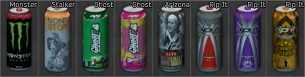
- Added 8 new energy drinks.
- Rebalanced stamina generation, skill buffs, debuffs, and prices for many energy drinks. The mod page has been updated to show the new updated changes.
- Heavily reduced poly count of energy drink model to reduce mod size and save fps.
- Added config option to enable alternative buff effects to all energy drinks so that they are more like regular Tarkov energy drinks with less powerful buffs and cheaper prices.
- Reduced spawn rate of all energy drinks (around 20% less)
- Increased ‘hands tremor’ debuff effect for rarer energy drinks.
- Fixed crash that occurred with Linux systems.
Version
1.1.1
I recommend using the ‘clean temp files’ option in the SPT Launcher settings to reset the cache so the energy drinks refresh.
- Updated all energy drink animation textures to look more realistic.
- I mainly recolored the lids of most cans and made them less bright and slightly more metallic.
- Added config option to make energy and hydration gains instant (like most vanilla tarkov consumables) instead of over 30 seconds.
Version
1.1.0
New Energy Drinks
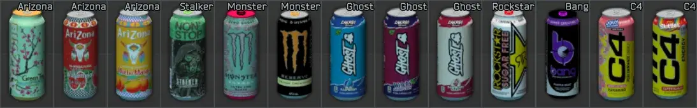
- Updated to SPT 4.0.x
- Added 10 new energy drinks & 3 Arizona drinks.
- Reworked energy drink buff effects to use a new tiered system: Common, Uncommon, Rare, Ultra-Rare.
- Higher tiered energy drinks offer larger energy gains, longer lasting buff effects, and stronger energy crashes after buffs subside.
- Loose loot and static loot spawn rates have been lowered drastically.
- C4 energy drinks and a few ultra-rare drinks now have a small chance to cause “heart failure” (death) after a period of time in-raid.
- Fixed issue with ground meshes like snow from appearing on energy drinks during drink animation.
Version
1.0.6
**SPT 3.11.x
- Fixed an error that occurred on startup with Fika headless clients
Version
1.0.5
SPT 3.11.x
- Fixed bug where energy drinks were not spawning in lootable containers
- Minor balancing changes
Version
1.0.4
There is a slight bug where energy drinks are failing to spawn in loot containers, I’m looking into the problem and will have a release out soon
SPT 3.11.x
- Updated to SPT 3.11.x
- Added 4 new energy drinks:
- Original S.T.A.L.K.E.R. Energy Drink, Monster Pacific Punch, Ghost Swedish Fish, Ghost Peaches
- Reworked buff effects, trader unlock progression, prices, and spawn rates of all energy drinks.
- Added enable_alternate_buffs config option which replaces all buffs and prices of all energy drinks with a less effective and much cheaper variant.
- Added config option to flea market ban energy drinks, some extremely rare and powerful energy drinks are now flea market banned by default.
- Removed both redbulls as I had problems porting the animations to 2022 unity. idk if they will come back.
- Replaced static loot container weights of each energy drink with a new multiplier system in the config file, this will help normalize energy drink spawns on all maps.
Version
1.0.3
SPT 3.10.x
- Added three new energy drinks
-
Rockstar Original Energy Drink
-
C4 Starburst Energy Drink
-
Starbucks Double Shot Energy Drink
-
- Lowered carry weight of all energy drinks
- Lowered spawn chances of many energy drinks
- Slight balancing adjustments for a few drinks
- energy and hydration now increases overtime instead of all at once when drinking energy drinks
- Fixed label texture clipping that occured on the top and bottom edges of can labels
- Fixed incorrect can rotation during drinking animation
- Replaced red bull can model with a higher quality model
- Slightly slowed down animation speed when drinking energy drinks
Version
1.0.2
SPT 3.9.x
- Added ability to store energy drinks in hall of fame room
- (they aren’t currently facing the right direction, something I’ll look into in the future)